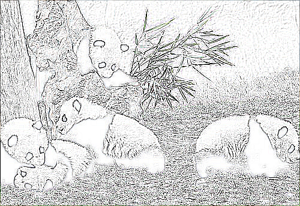
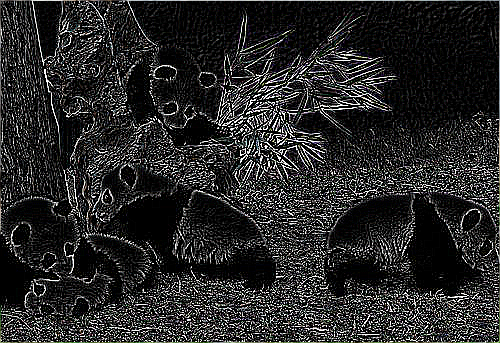
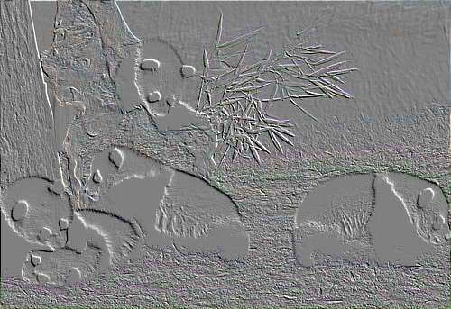

Pillow图像降噪处理
由于成像设备、传输媒介等因素的影响，图像总会或多或少的存在一些不必要的干扰信息，我们将这些干扰信息统称为“噪声”，比如数字图像中常见的“椒盐噪声”，指的是图像会随机出现的一些白、黑色的像素点。图像噪声既影响了图像的质量，又妨碍人们的视觉观赏。因此，噪声处理是图像处理过程中必不可少的环节之一，我们把处理图像噪声的过程称为“图像降噪”。
随着数字图像技术的不断发展，图像降噪方法也日趋成熟，通过某些算法来构造滤波器是图像降噪的主要方式。滤波器能够有效抑制噪声的产生，并且不影响被处理图像的形状、大小以及原有的拓扑结构。
Pillow 通过 ImageFilter 类达到图像降噪的目的，该类中集成了不同种类的滤波器，通过调用它们从而实现图像的平滑、锐化、边界增强等图像降噪操作。常见的降噪滤波器如下表所示：
从上述表格中选取几个方法进行示例演示，下面是等待处理的原始图像：
图1：pilow图像处理
图2：图像模糊
图6：平滑图
如果您使用过 PhotoShop（简称 Ps，一款专业的图像处理软件）、Fireworks（简称 Fw，一款专业的图像处理软件） 或者手机美图软件的话，其实不难发现，上述操作就是给图片添加一个“滤镜”，通过添加滤镜来改变图片的外观，从而影响了我们对于图片的感官体验。
随着数字图像技术的不断发展，图像降噪方法也日趋成熟，通过某些算法来构造滤波器是图像降噪的主要方式。滤波器能够有效抑制噪声的产生，并且不影响被处理图像的形状、大小以及原有的拓扑结构。
Pillow 通过 ImageFilter 类达到图像降噪的目的，该类中集成了不同种类的滤波器，通过调用它们从而实现图像的平滑、锐化、边界增强等图像降噪操作。常见的降噪滤波器如下表所示：
| 名称 | 说明 |
|---|---|
| ImageFilter.BLUR | 模糊滤波，即均值滤波 |
| ImageFilter.CONTOUR | 轮廓滤波，寻找图像轮廓信息 |
| ImageFilter.DETAIL | 细节滤波，使得图像显示更加精细 |
| ImageFilter.FIND_EDGES | 寻找边界滤波（找寻图像的边界信息） |
| ImageFilter.EMBOSS | 浮雕滤波，以浮雕图的形式显示图像 |
| ImageFilter.EDGE_ENHANCE | 边界增强滤波 |
| ImageFilter.EDGE_ENHANCE_MORE | 深度边缘增强滤波 |
| ImageFilter.SMOOTH | 平滑滤波 |
| ImageFilter.SMOOTH_MORE | 深度平滑滤波 |
| ImageFilter.SHARPEN | 锐化滤波 |
| ImageFilter.GaussianBlur() | 高斯模糊 |
| ImageFilter.UnsharpMask() | 反锐化掩码滤波 |
| ImageFilter.Kernel() | 卷积核滤波 |
| ImageFilter.MinFilter(size) | 最小值滤波器，从 size 参数指定的区域中选择最小像素值，然后将其存储至输出图像中。 |
| ImageFilter.MedianFilter(size) | 中值滤波器，从 size 参数指定的区域中选择中值像素值，然后将其存储至输出图像中。 |
| ImageFilter.MaxFilter(size) | 最大值滤波器 |
| ImageFilter.ModeFilter() | 模式滤波 |
从上述表格中选取几个方法进行示例演示，下面是等待处理的原始图像：
图1：pilow图像处理
模糊处理
# 导入Image类和ImageFilter类
from PIL import Image,ImageFilter
im = Image.open("C:/Users/Administrator/Desktop/国宝.jpg")
#图像模糊处理
im_blur=im.filter(ImageFilter.BLUR)
im_blur.show()
im_blur.save("C:/Users/Administrator/Desktop/模糊.png")
输出图像如下：图2：图像模糊
轮廓图
from PIL import Image,ImageFilter
im = Image.open("C:/Users/Administrator/Desktop/国宝.jpg")
#生成轮廓图
im2=im.filter(ImageFilter.CONTOUR)
im2.show()
im2.save("C:/Users/Administrator/Desktop/轮廓图.png")
输出图像，显示如下：

图3：图像轮廓图
图3：图像轮廓图
边缘检测
from PIL import Image,ImageFilter
im = Image.open("C:/Users/Administrator/Desktop/国宝.jpg")
#边缘检测
im3=im.filter(ImageFilter.FIND_EDGES)
im3.show()
im3.save("C:/Users/Administrator/Desktop/边缘检测.png")
输出图像结果：

图4：图像边缘检测
图4：图像边缘检测
浮雕图
from PIL import Image,ImageFilter
im = Image.open("C:/Users/Administrator/Desktop/国宝.jpg")
#浮雕图
im4=im.filter(ImageFilter.EMBOSS)
im4.show()
im4.save("C:/Users/Administrator/Desktop/浮雕图.png")
输出图像如下：

图5：浮雕图
图5：浮雕图
平滑图像
#生成平滑图像
from PIL import Image,ImageFilter
im = Image.open("C:/Users/Administrator/Desktop/国宝.jpg")
#平滑图smooth
im5=im.filter(ImageFilter.SMOOTH)
im5.show()
im5.save("C:/Users/Administrator/Desktop/平滑图.png")
输出图像如下：图6：平滑图
如果您使用过 PhotoShop（简称 Ps，一款专业的图像处理软件）、Fireworks（简称 Fw，一款专业的图像处理软件） 或者手机美图软件的话，其实不难发现，上述操作就是给图片添加一个“滤镜”，通过添加滤镜来改变图片的外观，从而影响了我们对于图片的感官体验。
关注公众号「站长严长生」，在手机上阅读所有教程，随时随地都能学习。内含一款搜索神器，免费下载全网书籍和视频。

微信扫码关注公众号